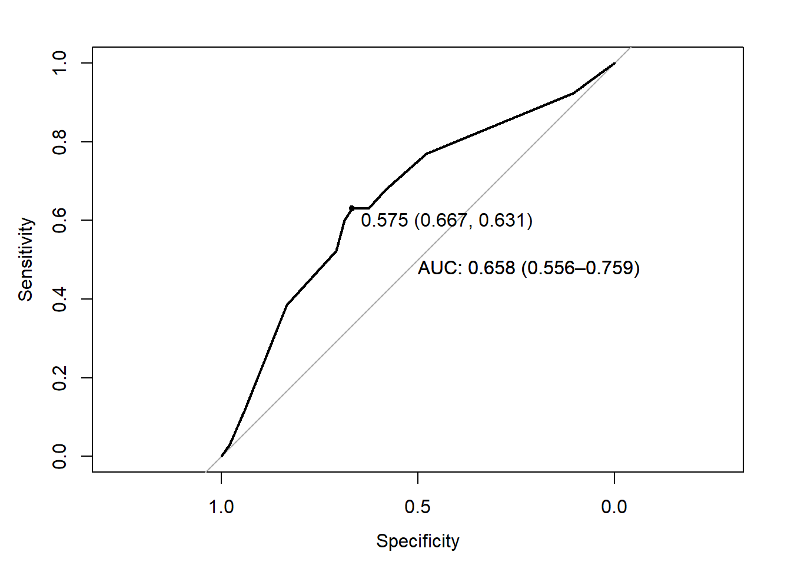
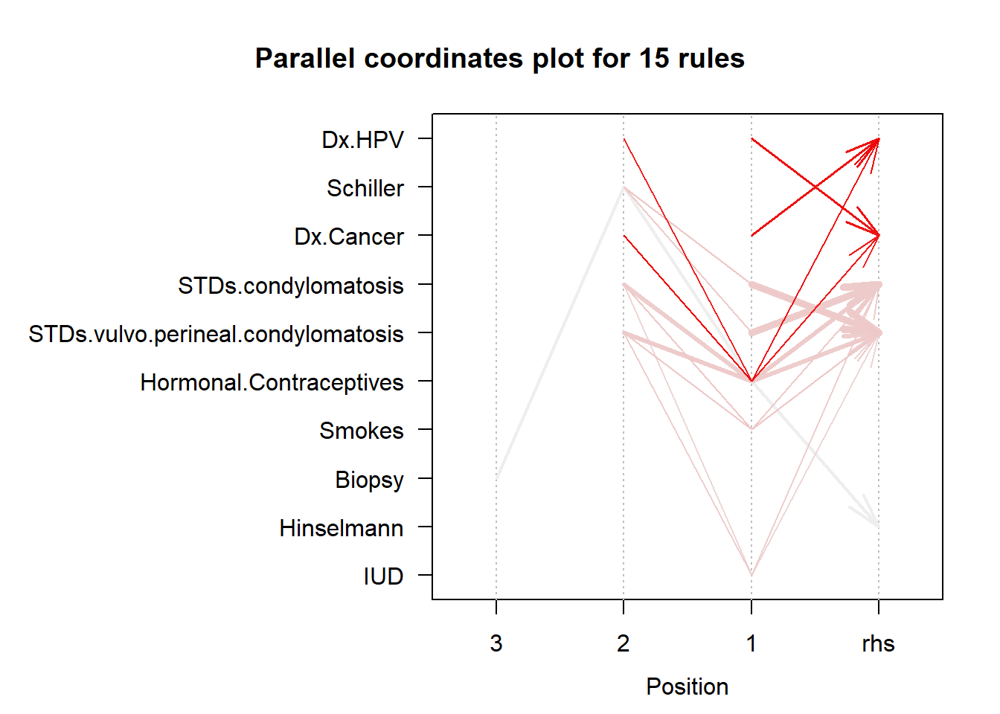

3.13 GLM (Poisson - Logistic)
2020-05-18
- We want to know if the number of awards earned by students at one high school is associated to the type of program in which the student was enrolled (prog: 1=vocational, 2=general, 3=academic) and the score on their final exam in math (math).
Read the data
## id num_awards prog math
## Min. : 1.00 Min. :0.00 Min. :1.000 Min. :33.00
## 1st Qu.: 50.75 1st Qu.:0.00 1st Qu.:2.000 1st Qu.:45.00
## Median :100.50 Median :0.00 Median :2.000 Median :52.00
## Mean :100.50 Mean :0.63 Mean :2.025 Mean :52.65
## 3rd Qu.:150.25 3rd Qu.:1.00 3rd Qu.:2.250 3rd Qu.:59.00
## Max. :200.00 Max. :6.00 Max. :3.000 Max. :75.00table outcome
##
## 0 1 2 3 4 5 6
## 124 49 13 9 2 2 1fit a poisson regression
##
## Call:
## glm(formula = num_awards ~ prog + math, family = "poisson", data = sim)
##
## Deviance Residuals:
## Min 1Q Median 3Q Max
## -2.2043 -0.8436 -0.5106 0.2558 2.6796
##
## Coefficients:
## Estimate Std. Error z value Pr(>|z|)
## (Intercept) -5.24712 0.65845 -7.969 1.60e-15 ***
## prog2 1.08386 0.35825 3.025 0.00248 **
## prog3 0.36981 0.44107 0.838 0.40179
## math 0.07015 0.01060 6.619 3.63e-11 ***
## ---
## Signif. codes: 0 '***' 0.001 '**' 0.01 '*' 0.05 '.' 0.1 ' ' 1
##
## (Dispersion parameter for poisson family taken to be 1)
##
## Null deviance: 287.67 on 199 degrees of freedom
## Residual deviance: 189.45 on 196 degrees of freedom
## AIC: 373.5
##
## Number of Fisher Scoring iterations: 6compute relative risks (RR)
## RR 2.5 % 97.5 %
## (Intercept) 0.00526263 0.001400301 0.0185869
## prog2 2.95606545 1.545030949 6.3972554
## prog3 1.44745846 0.612501440 3.5467192
## math 1.07267164 1.050742170 1.0953533histogram for the outcome

due to the excess of zerosit would be advise to consider a ZERO-INFLATED POISSON REGRESSION
- A researcher is interested in how variables, such as GRE (Graduate Record Exam scores), GPA (grade point average) and prestige of the undergraduate institution, effect admission into graduate school.
## admit gre gpa rank
## Min. :0.0000 Min. :220.0 Min. :2.260 Min. :1.000
## 1st Qu.:0.0000 1st Qu.:520.0 1st Qu.:3.130 1st Qu.:2.000
## Median :0.0000 Median :580.0 Median :3.395 Median :2.000
## Mean :0.3175 Mean :587.7 Mean :3.390 Mean :2.485
## 3rd Qu.:1.0000 3rd Qu.:660.0 3rd Qu.:3.670 3rd Qu.:3.000
## Max. :1.0000 Max. :800.0 Max. :4.000 Max. :4.000fit a logistic regression model
##
## Call:
## glm(formula = admit ~ gre + gpa + rank, family = "binomial",
## data = school)
##
## Deviance Residuals:
## Min 1Q Median 3Q Max
## -1.5802 -0.8848 -0.6382 1.1575 2.1732
##
## Coefficients:
## Estimate Std. Error z value Pr(>|z|)
## (Intercept) -3.449548 1.132846 -3.045 0.00233 **
## gre 0.002294 0.001092 2.101 0.03564 *
## gpa 0.777014 0.327484 2.373 0.01766 *
## rank -0.560031 0.127137 -4.405 1.06e-05 ***
## ---
## Signif. codes: 0 '***' 0.001 '**' 0.01 '*' 0.05 '.' 0.1 ' ' 1
##
## (Dispersion parameter for binomial family taken to be 1)
##
## Null deviance: 499.98 on 399 degrees of freedom
## Residual deviance: 459.44 on 396 degrees of freedom
## AIC: 467.44
##
## Number of Fisher Scoring iterations: 4compute OR and 95%CI
## OR 2.5 % 97.5 %
## (Intercept) 0.03175998 0.003309497 0.2835650
## gre 1.00229659 1.000171559 1.0044714
## gpa 2.17496718 1.152082367 4.1717746
## rank 0.57119114 0.442656492 0.7294389Predict the probability (p) of admission
add a column with the logit values
plot linearity between logit and predictive variables


test models’ goodness of fit
##
## Hosmer and Lemeshow goodness of fit (GOF) test
##
## data: school$admit, fitted(logistic)
## X-squared = 3.2185, df = 8, p-value = 0.9199as the p-value is higher than 0.05 we do not reject H0: good fit of the model to the data.
ROC - AUC

Confusion matrix
## Confusion Matrix and Statistics
##
## Reference
## Prediction 0 1
## 0 253 20
## 1 98 29
##
## Accuracy : 0.705
## 95% CI : (0.6577, 0.7493)
## No Information Rate : 0.8775
## P-Value [Acc > NIR] : 1
##
## Kappa : 0.1856
##
## Mcnemar's Test P-Value : 1.356e-12
##
## Sensitivity : 0.7208
## Specificity : 0.5918
## Pos Pred Value : 0.9267
## Neg Pred Value : 0.2283
## Prevalence : 0.8775
## Detection Rate : 0.6325
## Detection Prevalence : 0.6825
## Balanced Accuracy : 0.6563
##
## 'Positive' Class : 0
##